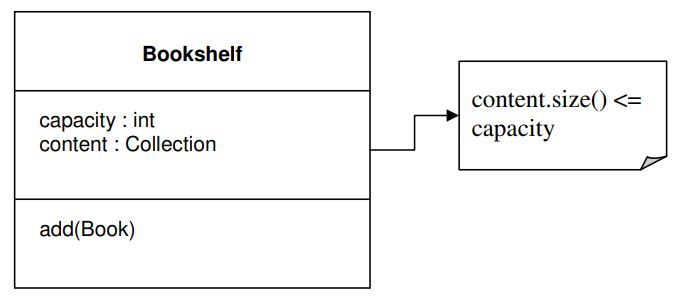

Refatorando Por Uma Visão Mais Profunda
Refatoração Contínua
Até agora falamos sobre o domínio e a importância de criar um modelo que expresse o domínio. Demos algumas orientações sobre as técnicas a serem utilizadas para criar um modelo útil. O modelo deve estar fortemente associado ao domínio de onde vem. Também dissemos que o design do código deve ser feito em torno do modelo, e o próprio modelo deve ser aprimorado com base nas decisões de design. Projetar sem um modelo pode levar a um software que não é fiel ao domínio que atende e pode não ter o comportamento esperado. A modelagem sem feedback do projeto e sem o envolvimento dos desenvolvedores leva a um modelo que não é bem compreendido por quem precisa implementá-lo e pode não ser apropriado para as tecnologias utilizadas.
Durante o processo de design e desenvolvimento, precisamos parar de vez em quando e dar uma olhada no código. Talvez seja hora de uma refatoração. A refatoração é o processo de reprojetar o código para torná-lo melhor sem alterar o comportamento do aplicativo. A refatoração geralmente é feita em etapas pequenas e controláveis, com muito cuidado para não quebrar a funcionalidade ou introduzir alguns bugs. Afinal, o propósito da refatoração é tornar o código melhor e não pior. Testes automatizados são de grande ajuda para garantir que não quebramos nada.
Há muitas maneiras de fazer refatoração de código. Existem até padrões de refatoração. Esses padrões representam uma abordagem automatizada para refatoração. Existem ferramentas construídas sobre esses padrões tornando a vida do desenvolvedor muito mais fácil do que costumava ser. Sem essas ferramentas, a refatoração pode ser muito difícil. Esse tipo de refatoração lida mais com o código e sua qualidade.
Existe outro tipo de refatoração, uma relacionada ao domínio e seu modelo. Às vezes, há uma nova visão sobre o domínio, algo fica mais claro ou uma relação entre dois elementos é descoberta. Tudo isso deve ser incluído no projeto por meio da refatoração. É muito importante ter um código expressivo que seja fácil de ler e entender. A partir da leitura do código, deve-se saber o que o código faz, mas também por que o faz. Só então o código pode realmente capturar a substância do modelo.
A refatoração técnica, aquela baseada em padrões, pode ser organizada e estruturada. A refatoração para um insight mais profundo não pode ser feita da mesma maneira. Não podemos criar padrões para isso. A complexidade de um modelo e a variedade de modelos não nos oferecem a possibilidade de abordar a modelagem de forma mecanicista. Um bom modelo é o resultado de pensamento profundo, insight, experiência e talento.
Uma das primeiras coisas que aprendemos sobre modelagem é ler as especificações do negócio e procurar substantivos e verbos. Os substantivos são convertidos em classes, enquanto os verbos se tornam métodos. Esta é uma simplificação e levará a um modelo superficial. Todos os modelos carecem de profundidade no início, mas devemos refatorar o modelo para um insight cada vez mais profundo.
O design tem que ser flexível. Um design rígido resiste à refatoração. Código que não foi construído com flexibilidade em mente é um código difícil de trabalhar. Sempre que uma mudança for necessária, você verá o código lutando contra você, e as coisas que devem ser refatoradas facilmente levam muito tempo.
Usar um conjunto comprovado de blocos de construção básicos junto com uma linguagem consistente traz alguma sanidade ao esforço de desenvolvimento. Isso deixa o desafio de realmente encontrar um modelo incisivo, que capture as preocupações sutis dos especialistas do domínio e possa conduzir um projeto prático. Um modelo que descarta o superficial e captura o essencial é um modelo profundo. Isso deve tornar o software mais sintonizado com a maneira como os especialistas do domínio pensam e mais responsivo às necessidades do usuário.
Tradicionalmente, a refatoração é descrita em termos de transformações de código com motivações técnicas. A refatoração também pode ser motivada por uma visão do domínio e um refinamento correspondente do modelo ou sua expressão no código.
Raramente são desenvolvidos modelos de domínio sofisticados, exceto por meio de um processo iterativo de refatoração, incluindo o envolvimento próximo dos especialistas do domínio com desenvolvedores interessados em aprender sobre o domínio.
Trazer à Luz aos Conceitos-Chave
A refatoração é feita em pequenas etapas. O resultado também é uma série de pequenas melhorias. Há momentos em que muitas pequenas mudanças agregam muito pouco valor ao design, e há momentos em que poucas mudanças fazem muita diferença. É um avanço.
Começamos com um modelo grosseiro e raso. Em seguida, refinamos e o design com base em um conhecimento mais profundo sobre o domínio, em uma melhor compreensão das preocupações. Adicionamos novos conceitos e abstrações a ele. O projeto é então refatorado. Cada refinamento adiciona mais clareza ao design. Isso cria, por sua vez, as premissas para um Breakthrough (avanço).
Um Breakthrough muitas vezes envolve uma mudança de pensamento, na forma como vemos o modelo. É também uma fonte de grande progresso no projeto, mas também tem alguns inconvenientes. Um Breakthrough pode implicar em uma grande quantidade de refatoração. Isso significa tempo e recursos, algo que parece que nunca temos o suficiente. Também é arriscado, porque uma ampla refatoração pode introduzir mudanças comportamentais no aplicativo.
Para alcançar um Breakthrough, precisamos tornar explícitos os conceitos implícitos. Quando falamos com os especialistas do domínio, trocamos muitas ideias e conhecimentos. Alguns dos conceitos chegam à Linguagem Ubíqua, mas alguns permanecem despercebidos no início. São conceitos implícitos, usados para explicar outros conceitos que já estão no modelo. Durante esse processo de refinamento do design, alguns desses conceitos implícitos chamam nossa atenção. Descobrimos que alguns deles desempenham um papel fundamental no design. Nesse ponto, devemos tornar os respectivos conceitos explícitos. Devemos criar classes e relacionamentos para eles. Quando isso acontecer, podemos ter a chance de um Breakthrough.
Conceitos implícitos não devem ficar assim. Se forem conceitos de domínio, devem estar presentes no modelo e no projeto. Como os reconhecemos? A primeira maneira de descobrir conceitos implícitos é ouvir a linguagem. A linguagem que estamos usando durante a modelagem e o design contém muitas informações sobre o domínio. No início pode não ser tanto, ou algumas das informações podem não ser usadas corretamente. Alguns dos conceitos podem não ser totalmente compreendidos, ou mesmo completamente mal compreendidos. Tudo isso faz parte do aprendizado de um novo domínio. Mas à medida que construímos nossa Linguagem Ubíqua, os conceitos-chave entram nela. É aí que devemos começar a procurar conceitos implícitos.
Às vezes, seções do design podem não ser tão claras. Existe um conjunto de relações que torna difícil seguir o caminho da computação. Ou os procedimentos estão fazendo algo complicado que é difícil de entender. Isso é estranheza no design. Este é um bom lugar para procurar conceitos ocultos. Provavelmente está faltando algo. Se um conceito-chave estiver faltando no quebra-cabeça, os outros terão que substituir sua funcionalidade. Isso vai engordar alguns objetos, adicionando-lhes um comportamento que não deveria estar lá. A clareza do design sofrerá. Tente ver se está faltando um conceito. Se algum for encontrado, torne-o explícito. Refatore o design para torná-lo mais simples e flexível.
Ao construir o conhecimento é possível esbarrar em contradições. O que um especialista de domínio diz parece contradizer o que outro defende. Um requisito pode parecer contradizer outro. Algumas das contradições não são realmente contradições, mas maneiras diferentes de ver a mesma coisa, ou simplesmente falta de precisão nas explicações. Devemos tentar conciliar as contradições. Às vezes, isso traz à tona conceitos importantes. Mesmo que isso não aconteça, ainda é importante manter tudo claro.
Outra maneira óbvia de desenterrar conceitos de modelo é usar a literatura de domínio. Existem livros escritos sobre quase todos os tópicos possíveis. Eles contêm muito conhecimento sobre os respectivos domínios. Os livros não costumam conter modelos para os domínios que apresentam. As informações que eles contêm precisam ser processadas, destiladas e refinadas. No entanto, as informações encontradas nos livros são valiosas e oferecem uma visão profunda do domínio.
Existem outros conceitos que são muito úteis quando explicitados: Restrição, Processo e Especificação. Uma restrição é uma maneira simples de expressar uma invariante. Aconteça o que acontecer com os dados do objeto, a invariante é respeitada. Isso é feito simplesmente colocando a lógica invariável em uma restrição. O seguinte é um exemplo simples. Seu objetivo é explicar o conceito, não representar a abordagem sugerida para um caso semelhante.
Podemos adicionar books a uma bookshelf, mas nunca devemos adicionar mais do que sua capacidade. Isso pode ser visto como parte do comportamento do Bookshelf, como no próximo código Java.
Podemos refatorar o código, extraindo a restrição em um método separado.
Colocar a restrição em um método separado tem a vantagem de torná-la explícita. É fácil de ler e todos perceberão que o método add() está sujeito a essa restrição. Também há espaço para crescimento adicionando mais lógica aos métodos se a restrição se tornar mais complexa.
Os processos geralmente são expressos em código com procedimentos. Não usaremos uma abordagem procedural, pois estamos usando uma linguagem orientada a objetos, então precisamos escolher um objeto para o processo e adicionar um comportamento a ele. A melhor maneira de implementar processos é usar um serviço. Se houver diferentes maneiras de realizar o processo, podemos encapsular o algoritmo em um objeto e usar uma Strategy. Nem todos os processos devem ser explicitados. Se a Linguagem Ubíqua menciona especificamente o respectivo processo, então é hora de uma implementação explícita.
O último método para tornar explícitos os conceitos que estamos abordando aqui é a Specification. Simplificando, uma Specification é usada para testar um objeto para ver se ele atende a determinados critérios.
A camada de domínio contém regras de negócios que são aplicadas a Entidades e Objetos de Valor. Essas regras geralmente são incorporadas aos objetos aos quais se aplicam. Algumas dessas regras são apenas um conjunto de perguntas cuja resposta é “sim” ou “não”. Tais regras podem ser expressas através de uma série de operações lógicas realizadas em valores booleanos, e o resultado final também é um booleano. Um exemplo é o teste realizado em um objeto Cliente para ver se ele é elegível para um determinado crédito. A regra pode ser expressa como um método, chamado isEligible(), e pode ser anexada ao objeto Customer. Mas esta regra não é um método simples que opera estritamente nos dados do Cliente. Avaliar a regra envolve verificar as credenciais do cliente, verificar se ele pagou suas dívidas no passado, verificar se ele tem saldos pendentes etc. Tais regras de negócios podem ser grandes e complexas, inchando o objeto a ponto de não mais servir ao seu propósito original. Neste ponto, podemos ficar tentados a mover toda a regra para o nível do aplicativo, porque parece que ela se estende além do nível do domínio. Na verdade, é hora de uma refatoração.
A regra deve ser encapsulada em um objeto próprio, que passa a ser a Specification do Cliente, e deve ser mantida na camada de domínio. O novo objeto conterá uma série de métodos booleanos que testam se um determinado objeto Cliente é elegível para crédito ou não. Cada método desempenha o papel de um pequeno teste, e todos os métodos combinados dão a resposta à pergunta original. Se a regra de negócio não estiver contida em um objeto Specification, o código correspondente acabará sendo espalhado por vários objetos, tornando-o inconsistente.
A Specification é usada para testar objetos para ver se eles atendem a alguma necessidade, ou se estão prontos para algum propósito. Também pode ser usado para selecionar um determinado objeto de uma coleção ou como condição durante a criação de um objeto.
Muitas vezes, uma única Specification verifica se uma regra simples é satisfeita e, em seguida, várias dessas specifications são combinadas em uma composição que expressa a regra complexa, assim:
Testar regras simples é mais simples, e apenas lendo este código fica óbvio o que significa que um cliente é elegível para um reembolso.